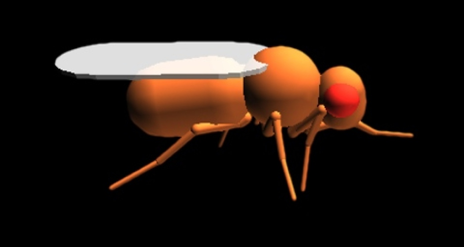
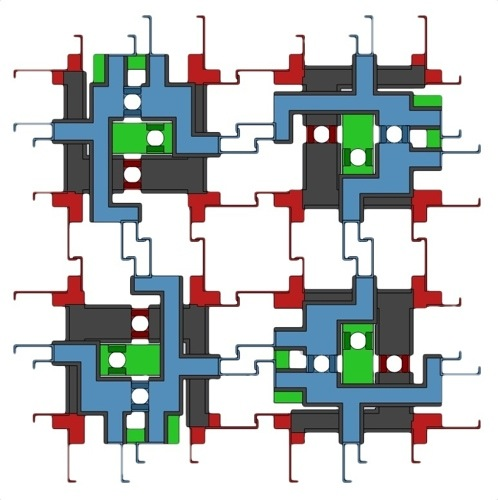
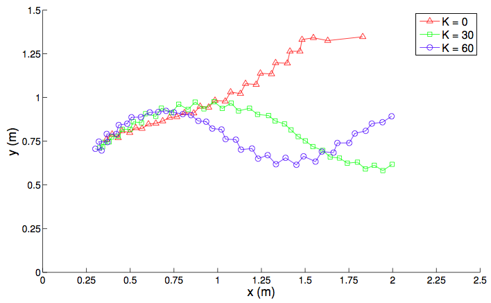
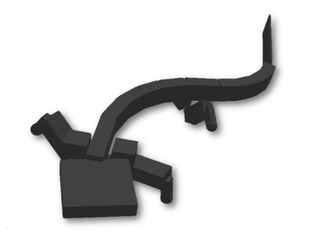

2012
| Optic Flow Control of Mico-Aerial Vehicle |
Sept 2012 - Feb 2013 |
I completed the work for my master's project in Radhika Napal's Self-Organizing Systems Research Group
at Harvard University. I worked on vision-based control of a 30 gram
autonomous micro-aerial vehicle (MAV). We used specialized vision sensors to estimate the optic flow around the
helicopter. This information is then used to control the aircraft and ultimately for
more complex tasks such as egomotion estimation, mapping, and coordination.
We investigated strategies for indoor navigation with fully on-board computation.
In order to test various sensor configurations
and control strategies, I created a 3-dimensional simulation of the MAV and
sensor ring using the Webots robotics simulator, along with a custom physics plugin.

micro-aerial vehicle with custom sensor ring
|
|
Dr. Karthik Dantu, Dr. Richard Moore, Dr. Radhika Nagpal (faculty), Dr. Dario Floreano (faculty) |
| Embedded System Development |
Jul 2012 - Sept 2012 |
As an electrical engineering intern at Synapse Product Development
in Seattle, I helped prototype, design, test, repair, document,
and deliver embedded systems for client projects. Details cannot be revealed under non-disclosure agreement.
|
Synapse Product Development team |
| 3D Computational Fly |
Feb 2012 - Jun 2012 |
This semester project, undertaken at the EPFL
Laboratory of Intelligent Systems,
involved the development of a biologically-accurate 3D simulated
Drosophila melanogaster model. We collected data on
Drosophila morphology using image analysis. We then
used this information to create a biologically-plausible
fly model in the Webots simulation
software and developed controllers to coordinate the 36 degrees
of freedom. Using biological data from high-speed video, we created a
hand-tuned controller that matched the alternating tripod gait observed
in Drosophila. The control structure and model itself can be easily
adapted to answer a variety of control-related questions related
to biology and robotics.
To test how well adapted the biological gait
is for speed, we used particle swarm optimization (PSO) to optimize the
phase difference between independent, hand-tuned leg oscillators
to maximize the speed of locomotion. Through this we found four
emergent gaits, all of which are faster than the hand-tuned controller.
These novel gaits can be used to increase the walking speed of ground
hexapod robots (sacrificing stability for speed).
Our findings suggest that a real-world fitness function likely
includes include additional factors such as energy consumption, stability,
and maneuverability. Furthermore, our testing emphasizes the
importance of claw adhesion in the development of insect walking.

Drosophila melanogaster model
|
|
leg degrees of freedom
|
model of right foreleg
|

high speed video of live Drosophila
|

3D model with hand-tuned controller
|
|
k-means cluster analysis of PSO results (subset of dimensions)
|
evolution of fitness over time
|
|
Dr. Pavan Ramdya, Dr. Dario Floreano (faculty) |
| Modular Power Strip |
Feb 2012 - May 2012 |
As an exercise in product design for my Computer-Aided Engineering course, we refined the design of a modular power strip.
Our design uses reconfigurable blocks to create a highly-adaptable power solution.
It allows the user to define the size, shape, orientation, and functions of the power strip based
on their particular needs. The design has several unique interactions: it can easily be expanded with new plugs;
it can be arranged to eliminate "lost" plugs; it can be adapted to fit in particular spaces; it can include
blocks for specialized uses (USB chargers, remote switches, etc.); it can have additional switches to turn
off a subset of plugs; and it can be updated based on evolving technological needs.

engineering model of modular power strip
|
|
concept sketch
|
possible configurations
|
|
exploded view of assembly
|

power connections
|
|
Lukas Frisch, Philipp Favre, David Baumier, Yuan Xu |
| Lane-Following Mobile Robot |
May 2012 |
As a mini project in our Mobile Robots course, two classmates and I created
a simple, autonomous lane-following robot. Using an e-puck and iPhone camera, the
robot detected lane boundaries and autonomously centered itself.
|
detected lane boundaries
|
edges in Hough space
|
|
Axel Ringh, Isak Tjernberg |
| Control of a Modular Robotic Fish |
May 2012 |
For this project, we programed a autonomous controller for a modular, robotic fish.
The waterproof, boxfish-like robot is built using 3 modules from the Salamandra robotica II
platform: a passive head, a midsection with pectoral fins, and a tail. We implemented
a sine-based controller (which represents a propagating wave from the body to the caudal fin)
on the robotic fish to make the robot swim. We also implemented a closed-loop controller
using an external tracking system to center the robot in the pool.
|
Salamandra robotica II modular robot (source: EPFL Biorobotics Lab)
|
|
robotic fish degrees of freedom
|
other robot configurations (source: EPFL Biorobotics Laboratory)
|
|

position control with different proportional gain constants
|
| Optic-Flow Based Mobile Robot Control |
Apr 2012 |
Optic-flow is the relative movement of the environment expressed in the reference
frame of the vision system. Intuitively we know that, when we are moving,
objects which appear to move more quickly through part of our visual
field are closer to us, while objects that move more slowly in the same visual region are farther away. Using this
idea, insects are able to quickly and robustly traverse cluttered environments.
We used this notion to create a simple, reactive mobile robot controller during
a two-week project for one of my courses that the EPFL.
We measured the optic flow on each side of the robot using two linear cameras and used this information
to control the speed and direction of the robot. We successfully used this vision system
to autonomously navigate through a complex, unknown corridor.

e-puck robot with cameras
|
|
textured corridor
|
path through corridor
|
| Mobile Robot Position Estimation and Navigation |
Mar 2012 |
In this two-week project, we programmed a controller for the e-puck mobile robot.
We used a rotating distance sensor to observe the environment and compared sensor values
to a grid of expected readings to estimate the position and orientation of the robot within
a known arena. Using this position estimate and a user-defined waypoint,
we determined the path using a gradient ascent algorithm.
|
visualization of rotating distance sensor (real resolution is 64 measurements/turn)
|
| IR / Optical Relative Positioning System |
Oct 2011 - Jan 2012 |
As a semester project working with the EPFL
Biorobotics
Laboratory, I designed, built, and tested a relative
positioning system for mobile robots that uses modulated
infrared or visible light to determine the range and
direction to a modulated source. The sensor is insensitive
to ambient light differences and other environmental
factors. The system also allows low bandwidth communication
and can be used to detect obstacles (using an onboard
transmitter). The device is smaller than existing systems,
and be easily adjusted to suit new environments.

prototype transceiver
|

first hardware revision
|
circuit board layout
|

block diagram of receiver
|
|
distance calibration
|
detector sensitivity
|
|
Dr. Alessandro Crespi, Dr. Juke Ijspeert (faculty) |
| Simulated Robotic Salamander |
Sept 2011 - Jan 2012 |
As a laboratory project for my Models of Biological
Sensory-Motor Systems course, we investigated the locomotion
and control of a 23 degree of freedom simulated salamander
robot. We examined the different parameters controlling both
walking and swimming using a sine-based controller and a
central pattern generator (CPG). We found that, when
optimizing the average speed through systematic tests and
particle swarm optimization, the optimal gait and swimming
trajectories are similar to the movement of actual
salamanders. We improved our salamander model by adding
stereovision and, using a biologically-inspired vision
system with a neural network, created an autonomous
salamander capable of tracking and walking toward objects.
|

walking salamander model
|
|
comparison of actual salamander and optimized controllers
|
|
|
configuration of central pattern generator model
|

transition from walking to swimming
|
previous year | timeline | next year